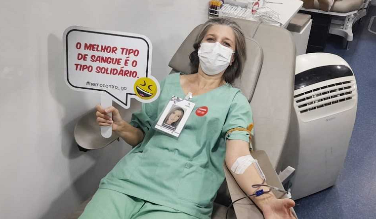

Principais Notícias
Novo banco de sangue de Mogi das Cruzes passa a funcionar a partir desta segunda-feira
Serviço atende em espaço na Vila Industrial, antes o atendimento era feito na Santa Casa.
Hospital tem nova empresa que administra banco de sangue.
HDT celebra Dia dos Médicos com doação de sangue para Hemocentro e homenagem à equipe

Colaboradores da unidade do Governo de Goiás aderem à ação, que resultou em 63 bolsas de sangue e 14 cadastros de
medula óssea e contou com homenagem à equipe médica
Ver mais